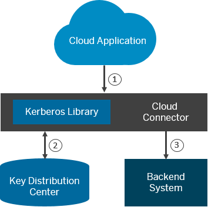

Configuring Kerberos in the Cloud Connector
Context
The Cloud connector allows you to propagate users authenticated in SAP Cloud Platform via Kerberos against back-end systems. It uses the Service For User and Constrained Delegation protocol extension of Kerberos.
We use Key Distribution Center (KDC) to exchange messages in order to retrieve Kerberos tokens for a certain user and a back-end system.
For more information, see Kerberos Protocol Extensions: Service for User
and Constrained Delegation Protocol
|
 |
|
Procedure
Example
You have a back-end system protected with SPNego authentication in your corporate network. You want to call it from a cloud application while preserving the identity of a cloud-authenticated user.
For this purpose, you need to define the following:
- A connectivity destination in SAP Cloud Platform, with ProxyType = OnPremise
- A system mapping made in the Cloud connector.
(Choose Cloud to On Premise from your account menu, Go to
tab
 Access Control
Access Control  Add
Add  , and for Principal Type, select
Kerberos.)
, and for Principal Type, select
Kerberos.) - Kerberos configuration in the Cloud connector, where the service user is allowed to delegate calls for your back-end host service. See the Procedure section above.
Result:
When these configurations are provided, if you call a back-end system, the Cloud connector will obtain an SPNego token from your KDC for the cloud-authenticated user. This token will be sent along with the request to the back end, so that it can authenticate the user and the identity to be preserved.